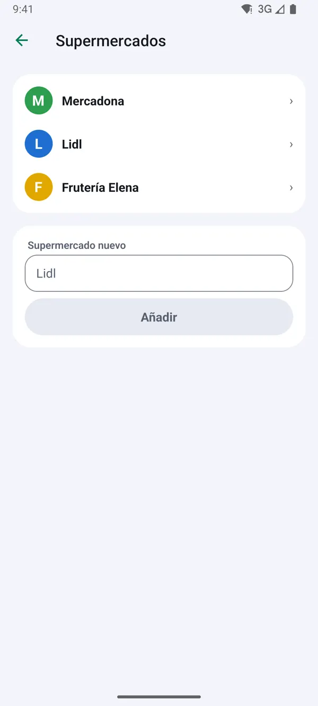
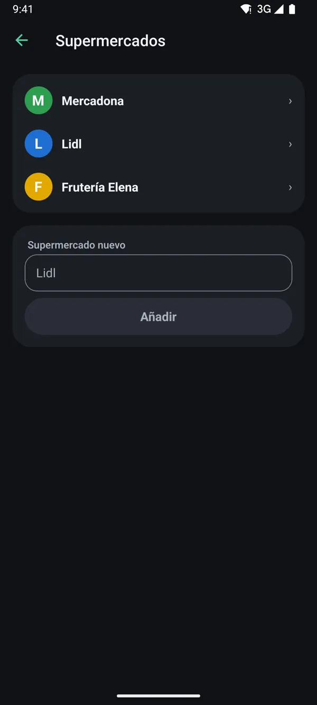
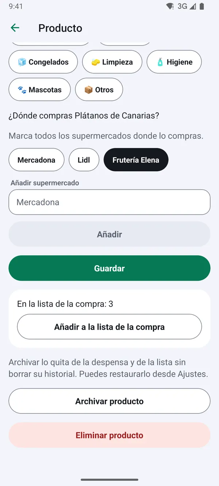
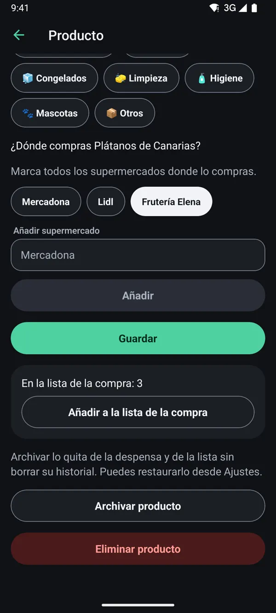
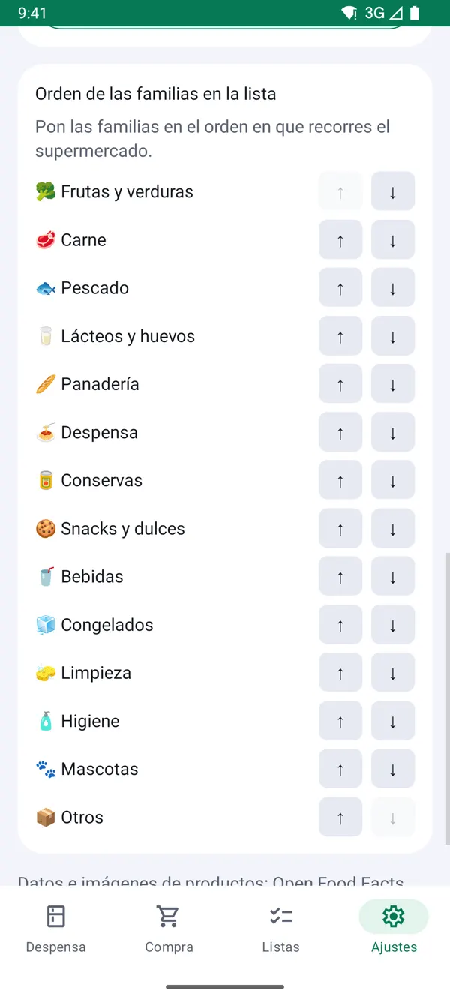
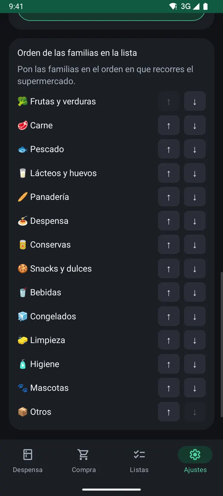
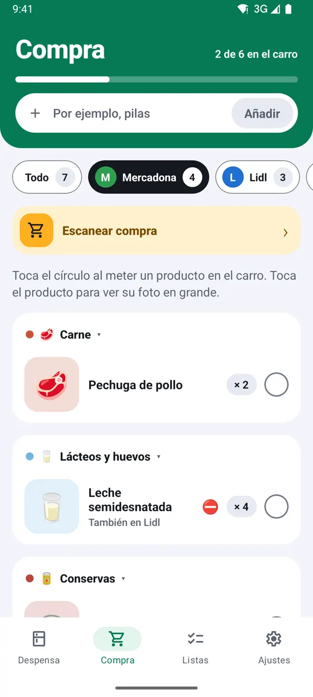
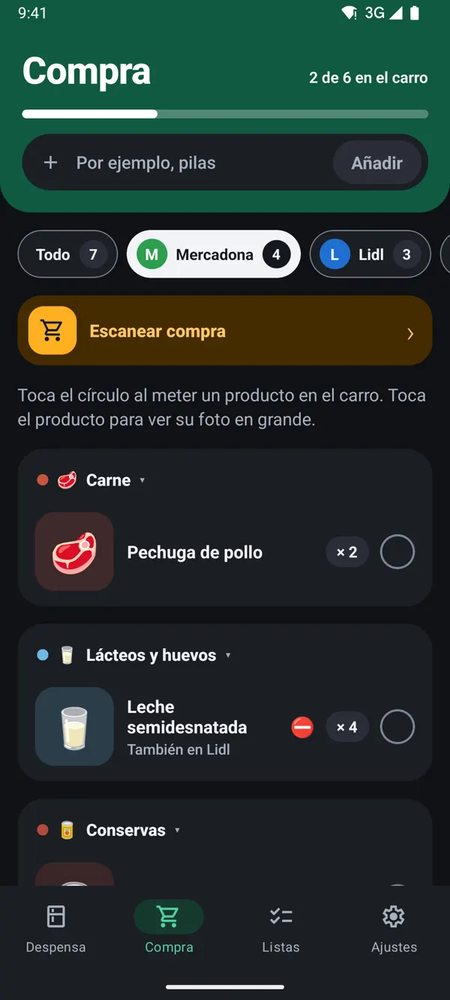
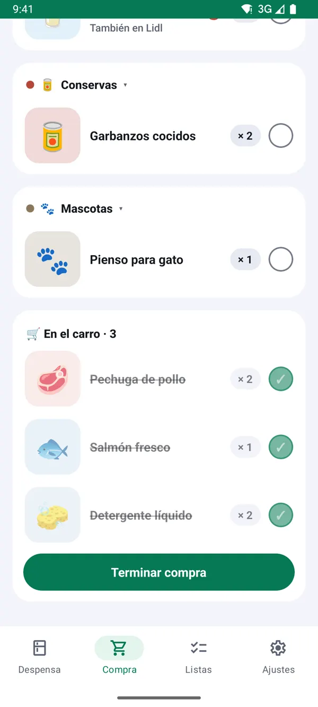
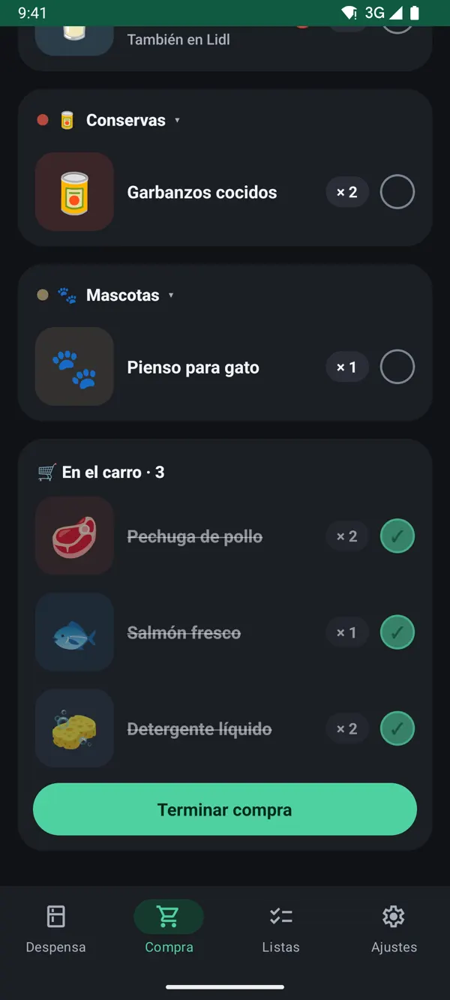

Cómo hacer la compra por supermercado
Actualizado el 13 de noviembre de 2026
Casi todas las casas compran en varias tiendas. Si la lista se separa por supermercado y sigue el orden de tus pasillos, haces la compra antes y no vuelves atrás a por lo olvidado.
1Añade tus supermercados
Ve a Ajustes → Supermercados.
- Escribe el nombre en Supermercado nuevo.
- Pulsa Añadir.
Truco: toca un supermercado de la lista para ponerle color o una foto de su cartel. Así lo reconoces de un vistazo en la compra.


2Di dónde compras cada producto
En la ficha de cada producto, la pregunta ¿Dónde compras…? te deja marcar uno o varios supermercados.
- Marca todas las tiendas donde lo compras.
- Pulsa Guardar.
Truco: si lo compras en dos sitios, la lista te lo enseña en los dos con un aviso «También en…».


3Ordena las familias como tu recorrido
En Ajustes → Orden de las familias en la lista, sube o baja cada familia con las flechas hasta que coincida con el orden en que recorres el súper: primero la fruta, luego la carne…
Truco: dentro de cada familia también puedes ordenar los productos: pulsa «Ordenar» junto a la familia en la despensa, mantén pulsado un producto y arrástralo.


4En el súper, filtra y marca
Abre la pestaña Compra al llegar a la tienda.
- Toca el supermercado en el que estás: la lista deja solo lo que se compra ahí.
- Toca el círculo al meter cada producto en el carro.
- La barra de arriba te dice cuánto te queda, por ejemplo «2 de 6 en el carro».
Truco: el símbolo ⛔ avisa de que el producto lleva algo que alguien de casa no puede tomar.


5Pulsa «Terminar compra»
Lo que has marcado baja a «En el carro». Al terminar, pulsa Terminar compra: el stock de casa sube solo y esos productos salen de la lista. Lo que no encontraste sigue en la lista para la próxima vez.
Truco: con «Escanear compra» puedes escanear cada producto al meterlo en el carro. Lo que no estaba en la lista también se apunta, y lo nuevo queda pendiente para configurarlo en casa.


TuDespensa es gratis y sin anuncios.
Llegará primero a Android y, más adelante, a iPhone. Las capturas son de la app con una casa de ejemplo.